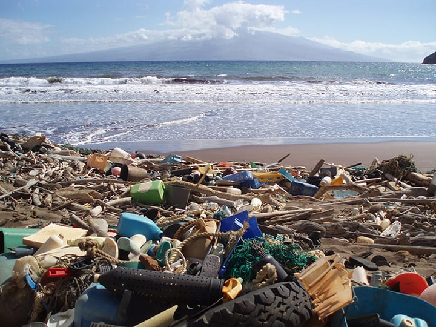
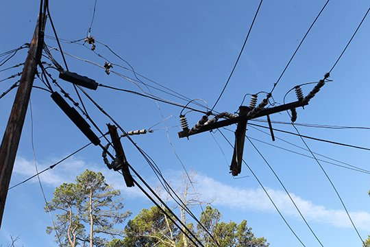

Common Public Issues

Potholes
Identify and report road hazards. Your reports help city engineers prioritize repairs for safer travel.
Learn More
Garbage
Keep your community clean. Report missed collections or illegal dumping sites to the sanitation team.
Learn More
Electricity
Report streetlight failures or hazardous wiring to ensure public safety and reliable power.
Learn More
Water Leakage
Prevent water wastage. Report broken pipelines and sewage leaks for immediate administrative action.
Learn More